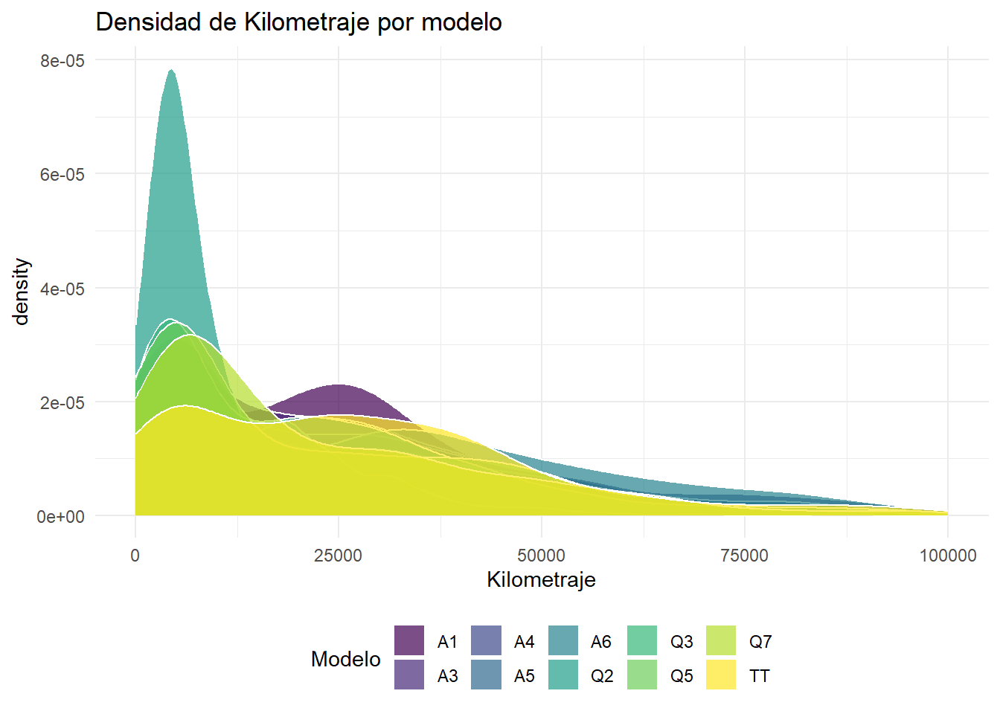

El objetivo de este trabajo será investigar ciertas variables o características de los coches de segunda mano que se ponen en venta en UK para ver ciertas tendencias relacionadas con el precio, modelo,edad del coche, kilometraje, tamaño del motor, … para ello, haremos diferentes gráficos en contenido y forma para poder sacar conclusiones sobre todas estas variables
LOGO
Precios por modelo
El propósito de este gráfico es poder ver con un simple vistazo el rango de precios por los cuales se mueven cada modelo de la marca en el mercado, lo primero que hay que destacar, es que se ha cogido una muestra aleatoria para hacer este gráfico ya que si no, el gráfico se vería muy saturado y de esta manera lo podemos ver mejor.
Como vemos, hay mucha variabilidad en los precios de los modelos (en algunos modelos no tanto), para esto puede haber varias explicaciones:
En primer lugar y más evidente, es que conforme pasan los años, los coches van perdiendo valor y esta pérdida cada vez es mayor.
También tenemos que pensar que cuanto más caro es el modelo de serie, más va a caer su precio en relación con coches más asequibles, esto es lo que puede estar pasando por ejemplo con el modelo A1 y el Q7.
Por ejemplo hay modelos como el Q2 que se llevan fabricando desde hace poco tiempo, por lo que esto tambien podría explicar su baja variabilidad
Código
# install.packages("tidyverse")library(tidyverse)# Importar datos desde el archivo CSVdatos_audi <-read_csv("docs/audi.csv")modelos_comunes <- datos_audi %>%group_by(model) %>%summarize(Frequency =n()) %>%arrange(desc(Frequency)) %>%slice_head(n =10) %>%pull(model)# Muestreo aleatorio de puntos por modelo (ajusta la cantidad según sea necesario)sampled_data <- datos_audi %>%filter(model %in% modelos_comunes) %>%group_by(model) %>%sample_n(size =50) # Crea el gráfico de violín con datos muestreados y ajustes estéticos personalizadosggplot(sampled_data,aes(x = model, y = price)) +geom_violin(fill ="#69b3a2", color ="#404080", alpha =0.5, width =0.7) +geom_jitter(color ="#404080", alpha =0.7, width =0.2) +labs(title ="Distribución de Precios por Modelo (Audi)",x ="Modelo",y ="Precio",subtitle ="Muestra aleatoria para mejorar la legibilidad") +theme_minimal() +theme(axis.text.x =element_text(angle =45, hjust =1),plot.title =element_text(size =18, face ="bold", hjust =0.5),plot.subtitle =element_text(size =12, hjust =0.5),axis.title =element_text(size =14),axis.text =element_text(size =10),legend.position ="none") +# Elimina la leyendascale_fill_viridis_c()
Audi Q2
un Q2 Brutal
Concentración de kilometraje por modelo
En este caso, estamos analizando el kilometraje que tienen los modelos en venta más importantes de Audi de media, este gráfico nos puede dar una idea de lo que nos vamos a encontrar en el mercado, ya que los kilómetros recorridos por un coche es una variable importantísima a la hora de comprar un coche de segunda mano, como podemos ver, la mayoría de la oferta se encuentra alrededor de los primeros 40.000 kilómetros, muy pocos kilómetros para este tipo de coches. sorprende el caso del Q2, aunque como señalabamos antes, es un modelo que se empezó a fabricar hace poco, por lo que es normal que se ubique en esa franja la mayoría de la oferta
Código
library(ggplot2)# Filtra para incluir solo los 10 modelos más comunesmodelos_comunes <- datos_audi %>%group_by(model) %>%summarize(Frequency =n()) %>%arrange(desc(Frequency)) %>%slice_head(n =10) %>%pull(model)ggplot(datos_audi %>%filter(model %in% modelos_comunes),aes(x = mileage, fill = model)) +geom_density(alpha =0.7, color ="white") +labs(title ="Densidad de Kilometraje por modelo",x ="Kilometraje",fill ="Modelo") +theme_minimal() +theme(legend.position ="bottom") +scale_fill_viridis_d() +guides(fill =guide_legend(title ="Modelo")) +xlim(0, 100000) # Ajusta el límite del eje x

Número de modelos en venta por la marca
En este caso, he decidido hacer una gráfica de pastel para poder ver cuales son los modelos que más se encuentran en el mercado, este gráfico también es muy importante, ya que cuanto más coches haya de un mismo modelo en venta más posibilidades tendremos de encontrar el coche que más se adapte a nuestras necesidades y puede que, en el caso de que no haya mucha demanda, se produzca un descenso de precios por la oferta excesiva de estos
Código
library(dplyr)library(ggplot2)# Calcula la proporción de modelosproporcion_modelos <-table(datos_audi$model) /nrow(datos_audi)# Define un umbral para filtrar modelos con baja proporciónumbral_proporcion <-0.02# Puedes ajustar este valor según tus necesidades# Filtra los modelos por encima del umbralmodelos_filtrados <-names(proporcion_modelos[proporcion_modelos >= umbral_proporcion])# Filtra el conjunto de datos originaldatos_filtrados <- datos_audi %>%filter(model %in% modelos_filtrados)# Crea el gráfico circular mejoradoggplot(data = datos_filtrados, aes(x ="", fill = model)) +geom_bar(width =1) +coord_polar(theta ="y") +scale_fill_brewer(palette ="Paired") +theme_minimal() +labs(title ="Proporción de Modelos de Coches Audi",fill ="Modelo",caption ="Modelos con proporción superior al umbral") +theme(legend.position ="bottom",plot.title =element_text(hjust =0.5, size =16, face ="bold"),plot.caption =element_text(hjust =0.5, size =10))
Gráfico para precio, año, kilometraje
De todos los gráficos, sin duda este es el mas revelador y el que más me gusta debido a que se puede analizar precio, año, kilometraje y modelo en un mismo gráfico, destacar de nuevo que lo hemos hecho a partir de una muestra ya que si no el gráfico estaría muy saturado
como podemos ver, hay una correlación directa entre el precio y el año, cuantos mas años tiene el coche mas valor pierde, despues también podemos ver como los coches con menos años tienen menos kilómetros (se determina con el tamaño de las burbujas) y ademas cuantos menos años tienen mayor es su valor.
tambien vemos como los modelos tales como el Q7 son los más caros y el A3 los mas baratos
Código
library(ggplot2)# Asegúrate de que las variables de interés sean numéricasdatos_filtrados$price <-as.numeric(datos_filtrados$price)datos_filtrados$mileage <-as.numeric(datos_filtrados$mileage)datos_filtrados$year <-as.numeric(datos_filtrados$year)# Convierte la variable 'year' a formato de fechadatos_filtrados$year <-as.Date(paste0(datos_filtrados$year, "-01-01"))# Muestra un subconjunto aleatorio de datos (ajusta el tamaño según sea necesario)set.seed(123) # Para reproducibilidaddatos_muestreados <- datos_filtrados[sample(nrow(datos_filtrados), 250), ]# Crea el gráfico de burbujas mejoradoggplot(datos_muestreados, aes(x = year, y = price, size = mileage, color =factor(model))) +geom_point(alpha =0.7, stroke =0.2) +scale_size_continuous(range =c(1, 15)) +scale_color_viridis_d() +labs(title ="Gráfico de Burbujas para Precio, Kilometraje y Año",x ="Año",y ="Precio",size ="Kilometraje",color ="Año") +theme_minimal() +theme(legend.position ="right",legend.background =element_rect(fill ="white", color ="black"), # Ajusta el fondo de la leyendalegend.key =element_rect(fill ="white", color ="black")) +# Ajusta el fondo de las teclas de la leyendageom_text(aes(label = model), size =2, check_overlap =TRUE, nudge_x =0.2, nudge_y =0.2) +guides(color =FALSE) # Oculta la leyenda de color
Correlación entre variables
Este gráfico seria un resumen de la correlacion entre ls distintas variables que estabamos analizando, como podemos ver, muchas de nuestras explicaciones se cumplen , como por ejemplo la relacion positiva entre precio y año de fabricacion, o la correlación negativa entre el año y el kilometraje, tambien esa relación negativa entre el precio y el kilometraje…
una de las variables que no hemos observado es el tamaño del motor, que como podemos ver tiene una relación positiva con el precio, los coches con motor mas grandes tambien son más caros
otra variable interesante es el consumo que en este caso viene en millas por galón, podemos ver que tiene correlación negativa con el precio del coche, hay que pensar que un coche que gasta mucho combustible es un problema para mantanerlo y esto se tiene en cuenta a la hora de comprar un coche
Código
library(ggplot2)library(corrplot)# Calcula la matriz de correlacióncor_matrix <-cor(datos_audi[, c("year", "price", "mileage", "tax", "mpg", "engineSize")])# Cambia los nombres de las filas y columnasrownames(cor_matrix) <-c("Año", "Precio", "Kilometraje", "Impuesto", "MPG", "Tamaño del Motor")colnames(cor_matrix) <-c("Año", "Precio", "Kilometraje", "Impuesto", "MPG", "Tamaño del Motor")# Configura un color más agradable para el mapa de calorcolor_palette <-colorRampPalette(c("#BB4444", "#EE9988", "#FFFFFF", "#77AADD", "#4477AA"))# Crea el mapa de calorcorrplot(cor_matrix, method ="color", col =color_palette(200),addCoef.col ="black",tl.col ="black",tl.srt =45,diag =FALSE)
Bonus track: grafico problematico
Este grafico lo añado como un extra ya que sin duda ha sido el más problematico, no me dejaba renderizar el archivo QMD, por lo que la solución que decidi tomar es guardar el gráfico en un HTML y añadirlo al QMD.
Este gráfico es el mas divertido que he hecho ya que ese efecto 3D junto a la posibilidad de poder moverse es muy atractivo. Por otro lado también destacar la posibilidad de ver las características de cada punto solo con pasar el raton por encima.
Información sobre la sesión
Abajo muestro mi entorno de trabajo y paquetes utilizados
---title: "los Audis molan"description: "Análisis de las características de los coches que se ponen en venta de la marca Audi en UK"author: - name: Luis Aarón Alarcón Saiz affiliation: Universitat de València affiliation-url: https://www.uv.esdate: 2024-01-21 #--categories: [trabajo BigData, AUDI] #--image: "./imagenes/LOGO.jpg"title-block-banner: true #- {true, false, "green","#AA0000"}title-block-banner-color: "#FF0000" toc-depth: 3smooth-scroll: trueformat: html: #backgroundcolor: "#F1F3F4" #embed-resources: true link-external-newwindow: truecode-tools: truecode-link: true---## Intro El objetivo de este trabajo será investigar ciertas variables o características de los coches de segunda mano que se ponen en venta en UK para ver ciertas tendencias relacionadas con el precio, modelo,edad del coche, kilometraje, tamaño del motor, ... para ello, haremos diferentes gráficos en contenido y forma para poder sacar conclusiones sobre todas estas variables---## Precios por modeloEl propósito de este gráfico es poder ver con un simple vistazo el rango de precios por los cuales se mueven cada modelo de la marca en el mercado, lo primero que hay que destacar, es que se ha cogido una muestra aleatoria para hacer este gráfico ya que si no, el gráfico se vería muy saturado y de esta manera lo podemos ver mejor.Como vemos, hay mucha variabilidad en los precios de los modelos (en algunos modelos no tanto), para esto puede haber varias explicaciones:En primer lugar y más evidente, es que conforme pasan los años, los coches van perdiendo valor y esta pérdida cada vez es mayor.También tenemos que pensar que cuanto más caro es el modelo de serie, más va a caer su precio en relación con coches más asequibles, esto es lo que puede estar pasando por ejemplo con el modelo A1 y el Q7.Por ejemplo hay modelos como el Q2 que se llevan fabricando desde hace poco tiempo, por lo que esto tambien podría explicar su baja variabilidad```{r}#| code-fold: true#| warning: false# install.packages("tidyverse")library(tidyverse)# Importar datos desde el archivo CSVdatos_audi <-read_csv("docs/audi.csv")modelos_comunes <- datos_audi %>%group_by(model) %>%summarize(Frequency =n()) %>%arrange(desc(Frequency)) %>%slice_head(n =10) %>%pull(model)# Muestreo aleatorio de puntos por modelo (ajusta la cantidad según sea necesario)sampled_data <- datos_audi %>%filter(model %in% modelos_comunes) %>%group_by(model) %>%sample_n(size =50) # Crea el gráfico de violín con datos muestreados y ajustes estéticos personalizadosggplot(sampled_data,aes(x = model, y = price)) +geom_violin(fill ="#69b3a2", color ="#404080", alpha =0.5, width =0.7) +geom_jitter(color ="#404080", alpha =0.7, width =0.2) +labs(title ="Distribución de Precios por Modelo (Audi)",x ="Modelo",y ="Precio",subtitle ="Muestra aleatoria para mejorar la legibilidad") +theme_minimal() +theme(axis.text.x =element_text(angle =45, hjust =1),plot.title =element_text(size =18, face ="bold", hjust =0.5),plot.subtitle =element_text(size =12, hjust =0.5),axis.title =element_text(size =14),axis.text =element_text(size =10),legend.position ="none") +# Elimina la leyendascale_fill_viridis_c()```---### Audi Q2---## Concentración de kilometraje por modeloEn este caso, estamos analizando el kilometraje que tienen los modelos en venta más importantes de Audi de media, este gráfico nos puede dar una idea de lo que nos vamos a encontrar en el mercado, ya que los kilómetros recorridos por un coche es una variable importantísima a la hora de comprar un coche de segunda mano, como podemos ver, la mayoría de la oferta se encuentra alrededor de los primeros 40.000 kilómetros, muy pocos kilómetros para este tipo de coches.sorprende el caso del Q2, aunque como señalabamos antes, es un modelo que se empezó a fabricar hace poco, por lo que es normal que se ubique en esa franja la mayoría de la oferta```{r}#| eval: true#| code-fold: true#| warning: falselibrary(ggplot2)# Filtra para incluir solo los 10 modelos más comunesmodelos_comunes <- datos_audi %>%group_by(model) %>%summarize(Frequency =n()) %>%arrange(desc(Frequency)) %>%slice_head(n =10) %>%pull(model)ggplot(datos_audi %>%filter(model %in% modelos_comunes),aes(x = mileage, fill = model)) +geom_density(alpha =0.7, color ="white") +labs(title ="Densidad de Kilometraje por modelo",x ="Kilometraje",fill ="Modelo") +theme_minimal() +theme(legend.position ="bottom") +scale_fill_viridis_d() +guides(fill =guide_legend(title ="Modelo")) +xlim(0, 100000) # Ajusta el límite del eje x```## Número de modelos en venta por la marcaEn este caso, he decidido hacer una gráfica de pastel para poder ver cuales son los modelos que más se encuentran en el mercado, este gráfico también es muy importante, ya que cuanto más coches haya de un mismo modelo en venta más posibilidades tendremos de encontrar el coche que más se adapte a nuestras necesidades y puede que, en el caso de que no haya mucha demanda, se produzca un descenso de precios por la oferta excesiva de estos```{r}#| code-fold: true#| warning: falselibrary(dplyr)library(ggplot2)# Calcula la proporción de modelosproporcion_modelos <-table(datos_audi$model) /nrow(datos_audi)# Define un umbral para filtrar modelos con baja proporciónumbral_proporcion <-0.02# Puedes ajustar este valor según tus necesidades# Filtra los modelos por encima del umbralmodelos_filtrados <-names(proporcion_modelos[proporcion_modelos >= umbral_proporcion])# Filtra el conjunto de datos originaldatos_filtrados <- datos_audi %>%filter(model %in% modelos_filtrados)# Crea el gráfico circular mejoradoggplot(data = datos_filtrados, aes(x ="", fill = model)) +geom_bar(width =1) +coord_polar(theta ="y") +scale_fill_brewer(palette ="Paired") +theme_minimal() +labs(title ="Proporción de Modelos de Coches Audi",fill ="Modelo",caption ="Modelos con proporción superior al umbral") +theme(legend.position ="bottom",plot.title =element_text(hjust =0.5, size =16, face ="bold"),plot.caption =element_text(hjust =0.5, size =10))```---## Gráfico para precio, año, kilometrajeDe todos los gráficos, sin duda este es el mas revelador y el que más me gusta debido a que se puede analizar precio, año, kilometraje y modelo en un mismo gráfico, destacar de nuevo que lo hemos hecho a partir de una muestra ya que si no el gráfico estaría muy saturadocomo podemos ver, hay una correlación directa entre el precio y el año, cuantos mas años tiene el coche mas valor pierde, despues también podemos ver como los coches con menos años tienen menos kilómetros (se determina con el tamaño de las burbujas) y ademas cuantos menos años tienen mayor es su valor.tambien vemos como los modelos tales como el Q7 son los más caros y el A3 los mas baratos```{r}#| code-fold: true#| warning: falselibrary(ggplot2)# Asegúrate de que las variables de interés sean numéricasdatos_filtrados$price <-as.numeric(datos_filtrados$price)datos_filtrados$mileage <-as.numeric(datos_filtrados$mileage)datos_filtrados$year <-as.numeric(datos_filtrados$year)# Convierte la variable 'year' a formato de fechadatos_filtrados$year <-as.Date(paste0(datos_filtrados$year, "-01-01"))# Muestra un subconjunto aleatorio de datos (ajusta el tamaño según sea necesario)set.seed(123) # Para reproducibilidaddatos_muestreados <- datos_filtrados[sample(nrow(datos_filtrados), 250), ]# Crea el gráfico de burbujas mejoradoggplot(datos_muestreados, aes(x = year, y = price, size = mileage, color =factor(model))) +geom_point(alpha =0.7, stroke =0.2) +scale_size_continuous(range =c(1, 15)) +scale_color_viridis_d() +labs(title ="Gráfico de Burbujas para Precio, Kilometraje y Año",x ="Año",y ="Precio",size ="Kilometraje",color ="Año") +theme_minimal() +theme(legend.position ="right",legend.background =element_rect(fill ="white", color ="black"), # Ajusta el fondo de la leyendalegend.key =element_rect(fill ="white", color ="black")) +# Ajusta el fondo de las teclas de la leyendageom_text(aes(label = model), size =2, check_overlap =TRUE, nudge_x =0.2, nudge_y =0.2) +guides(color =FALSE) # Oculta la leyenda de color```---## Correlación entre variablesEste gráfico seria un resumen de la correlacion entre ls distintas variables que estabamos analizando, como podemos ver, muchas de nuestras explicaciones se cumplen , como por ejemplo la relacion positiva entre precio y año de fabricacion, o la correlación negativa entre el año y el kilometraje, tambien esa relación negativa entre el precio y el kilometraje...una de las variables que no hemos observado es el tamaño del motor, que como podemos ver tiene una relación positiva con el precio, los coches con motor mas grandes tambien son más carosotra variable interesante es el consumo que en este caso viene en millas por galón, podemos ver que tiene correlación negativa con el precio del coche, hay que pensar que un coche que gasta mucho combustible es un problema para mantanerlo y esto se tiene en cuenta a la hora de comprar un coche```{r}#| code-fold: true#| warning: falselibrary(ggplot2)library(corrplot)# Calcula la matriz de correlacióncor_matrix <-cor(datos_audi[, c("year", "price", "mileage", "tax", "mpg", "engineSize")])# Cambia los nombres de las filas y columnasrownames(cor_matrix) <-c("Año", "Precio", "Kilometraje", "Impuesto", "MPG", "Tamaño del Motor")colnames(cor_matrix) <-c("Año", "Precio", "Kilometraje", "Impuesto", "MPG", "Tamaño del Motor")# Configura un color más agradable para el mapa de calorcolor_palette <-colorRampPalette(c("#BB4444", "#EE9988", "#FFFFFF", "#77AADD", "#4477AA"))# Crea el mapa de calorcorrplot(cor_matrix, method ="color", col =color_palette(200),addCoef.col ="black",tl.col ="black",tl.srt =45,diag =FALSE)```---## Bonus track: grafico problematicoEste grafico lo añado como un extra ya que sin duda ha sido el más problematico, no me dejaba renderizar el archivo QMD, por lo que la solución que decidi tomar es guardar el gráfico en un HTML y añadirlo al QMD.Este gráfico es el mas divertido que he hecho ya que ese efecto 3D junto a la posibilidad de poder moverse es muy atractivo.Por otro lado también destacar la posibilidad de ver las características de cada punto solo con pasar el raton por encima.<iframesrc="scatter3d_audi_mejorado.html"width="800"height="600"></iframe>----------------------<br>### Información sobre la sesiónAbajo muestro mi entorno de trabajo y paquetes utilizados```{r}#| echo: falsesessioninfo::session_info() %>% details::details(summary ='current session info') ```